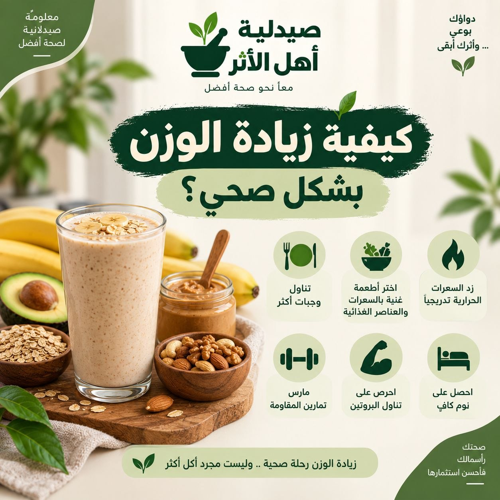
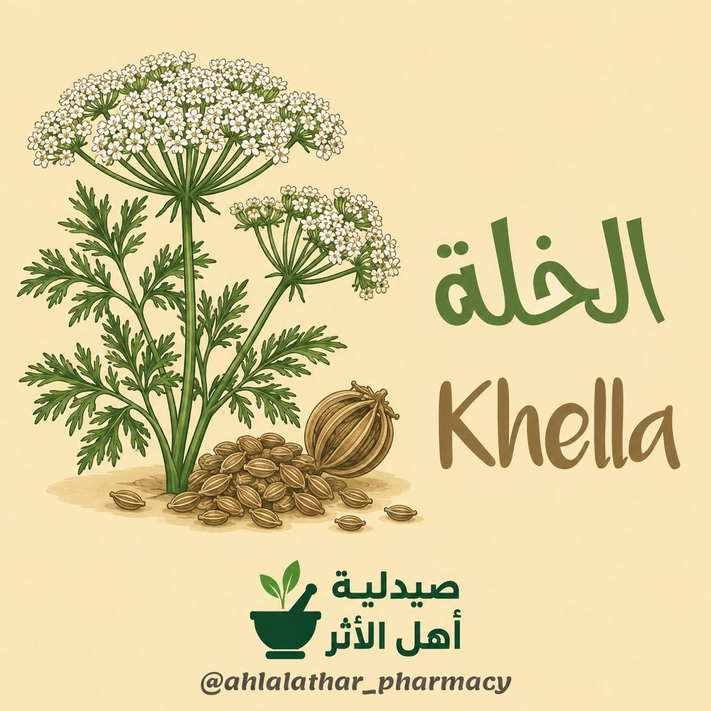
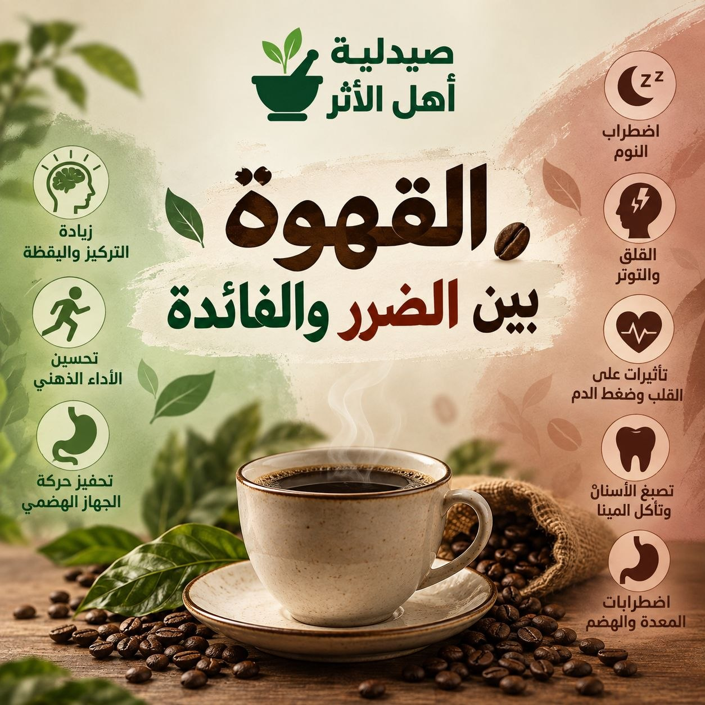

كيفية زيادة الوزن بشكل صحي وآمن؟
زيادة الوزن لا تعني تناول كميات كبيرة من الحلويات والوجبات السريعة، بل الهدف هو زيادة الكتلة العضلية والوزن تدريجيًا مع الحصول على احتياجات الجسم من البروتين والفيتامينات والمعادن.

زيادة الوزن لا تعني تناول كميات كبيرة من الحلويات والوجبات السريعة، بل الهدف هو زيادة الكتلة العضلية والوزن تدريجيًا مع الحصول على احتياجات الجسم من البروتين والفيتامينات والمعادن.

نبات طبي ذو تأثير واضح على المسالك البولية

تُعدّ القهوة من أكثر المشروبات استهلاكًا حول العالم، ويرتبط معظم تأثيرها بالكافيين، وهو مادة منبّهة للجهاز العصبي المركزي.